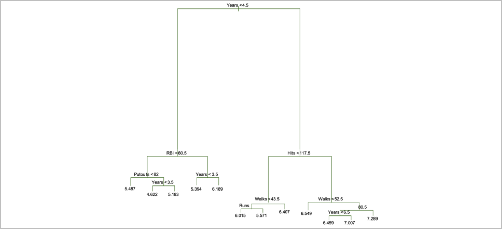
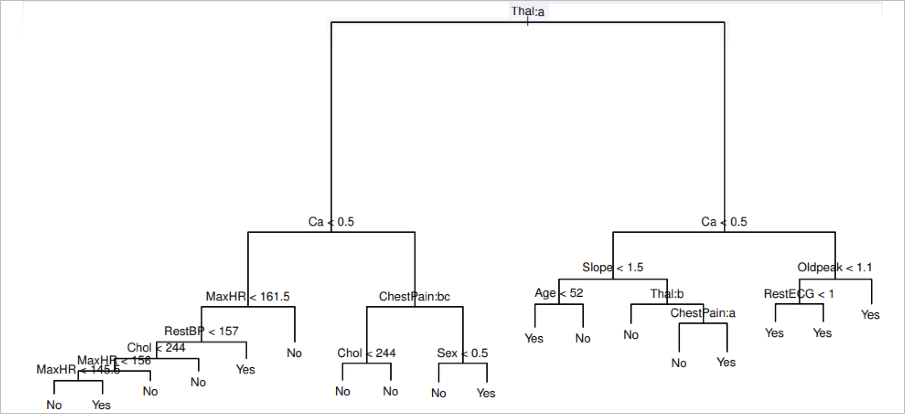

Fundamentals of
Data Analytics and
Predictions
Tree Methods I
Xi (Rossi) LUO
Department of Biostatistics and Data Science
School of Public Health
The University of Texas Health Science Center at Houston
Tree-Based Methods
- Tree-based methods for regression and classification
- These involve stratifying or segmenting the predictor space into a number of simple regions.
- Since the set of splitting rules used to segment the predictor space can be summarized in a tree, these types of approaches are known as decision-tree methods.
- Tree-based methods are simple and useful for interpretation
- very “natural” constructs
- particularly when the explanatory variables are categorical (and even better, when they are binary)
- very easy to explain to non-statisticians
Tree Example: What to do on a weekend?
Tree-Based Methods Cont.
- However, they typically are not competitive with the best supervised learning approaches in terms of prediction accuracy
- Hence, we will also discuss
- Bagging
- Random forests
- Boosting
- These methods grow multiple trees which are then combined to yield a single consensus prediction
- Combining a large number of trees can often result in dramatic improvements in prediction accuracy
Decision Tree Example: Hitters Dataset
- Baseball players salary
- How would you stratify it?
- Salary is color-coded
- Low: (blue, green)
- High: (yellow, red)
Decision Tree for the Hitters Dataset—1
Decision Tree for the Hitters Dataset—2
- For the Hitters data, a regression tree for predicting the salary of a baseball player, based on the number of years that he has played in the major leagues and the number of hits that he made in the previous year
- Be able to solve real-world data problems using software tools
- At a given internal node, the label (of the form $X_j \lt t_k$) indicates the left-hand branch emanating from that split, and the right-hand branch corresponds to $X_j \ge t_k$. For instance, the split at the top of the tree results in two large branches. The left-hand branch corresponds to Years < 4.5, and the right-hand branch corresponds to Years ≥ 4.5
- The tree has two internal nodes and three terminal nodes, or leaves
- The number in each leaf is the mean of the response for the observations that fall there
Decision Tree for the Baseball Salary Data—3
- Overall, the tree stratifies (or segments) the players into three regions of predictor space:
- $R_1=${X|Years < 4.5}
- $R_2=${X|Years ≥ 4.5, Hits < 117.5}
- $R_3=${X|Years ≥ 4.5, Hits ≥ 117.5}
Terminology for Trees
- In keeping with the tree analogy, the regions R1, R2, and R3 are known as terminal nodes
- Decision trees are typically drawn upside down, in the sense that the leaves are at the bottom of the tree
- The points along the tree where the predictor space is split are referred to as internal nodes
- In the hitters tree, the two internal nodes are indicated by the text Years < 4.5 and Hits < 117.5
Interpretation of Tree Results
- Years is the most important factor in determining Salary, and players with less experience earn lower salaries than more experienced players
- Given that a player is less experienced, the number of Hits that he made in the previous year seems to play little role in his Salary
- But among players who have been in the major leagues for five or more years, the number of Hits made in the previous year does affect Salary, and players who made more Hits last year tend to have higher salaries.
- Surely an over-simplification, but compared to a regression model, it is easy to display, interpret and explain
Olive Oil Example—1 (From Ruczinski & Irizarry Notes)
- 572 olive oils were analyzed for their content of eight fatty acids
- (palmitic, palmitoleic, stearic, oleic, linoleic, arachidic, linolenic, and eicosenoic)
- 9 collection areas:
- 4 from Southern Italy (North and South Apulia, Calabria, Sicily),
- 2 from Sardinia (Inland and Coastal) and
- 3 from Northern Italy (Umbria, East and West Liguria)
- The concentrations of different fatty acids vary from up to 85% for oleic acid to as low as 0.01% for eicosenoic acid.
Olive Oil Example—2
Iris Data Example
Tree-Building Process
- We divide the predictor space — that is, the set of possible values for $X_1$,$X_2$ ... $X_p$ — into $J$ distinct and non-overlapping regions, $R_1$, $R_2$....$R_j$
- For every observation that falls into the region $R_j$ , we make the same prediction, which is simply the mean of the response values for the training observations in $R_j$
Details of the Tree-Building Process—1
- In theory, the regions could have any shape. However, we choose to divide the predictor space into high-dimensional rectangles, or boxes, for simplicity and for ease of interpretation of the resulting predictive model
- The goal is to find boxes $R_1$, $R_2$....$R_j$ that minimize the RSS, given by $\sum_{j=1}^{J}\sum_{i\in R_j}{(yi-\hat{y_{R_j}})^2}$
- where $\hat{y_{R_j}}$ is the mean response for the training observations within the jth box
Details of the Tree-Building Process—2
- Unfortunately, it is computationally infeasible to consider every possible partition of the feature space into J boxes
- For this reason, we take a top-down, greedy approach that is known as recursive binary splitting
- The approach is top-down because it begins at the top of the tree and then successively splits the predictor space; each split is indicated via two new branches further down on the tree
- It is greedy because at each step of the tree-building process, the best split is made at that particular step, rather than looking ahead and picking a split that will lead to a better tree in some future step
Details of the Tree-Building Process—3
- We first select the predictor Xj and the cut point s such that splitting the predictor space into the regions {X|Xj < s} and {X|Xj ≥ s} leads to the greatest possible reduction in RSS
- Next, we repeat the process, looking for the best predictor and best cut point in order to split the data further so as to minimize the RSS within each of the resulting regions
- However, this time, instead of splitting the entire predictor space, we split one of the two previously identified regions. We now have three regions
- Again, we look to split one of these three regions further, so as to minimize the RSS. The process continues until a stopping criterion is reached; for instance, we may continue until no region contains more than five observations
Predictions
-
We predict the response for a given test observation using the mean of the training observations in
the region to which that test observation belongs
Visualizing Tree Splitting
Pruning a Tree—1
- The process described previously may produce good predictions on the training set, but is likely to overfit the data, leading to poor test set performance
- A smaller tree with fewer splits (that is, fewer regions $ùëÖ_1$ ... $ùëÖ_ùêΩ$) might lead to lower variance and better interpretation at the cost of a little bias
- One possible alternative to the process described above is to grow the tree only so long as the decrease in the RSS due to each split exceeds some (high) threshold
- This strategy will result in smaller trees, but is too short-sighted: a seemingly worthless split early on in the tree might be followed by a very good split — that is, a split that leads to a large reduction in RSS later on
Pruning a Tree—2
- A better strategy is to grow a very large tree T0, and then prune it back in order to obtain a subtree
- Cost complexity pruning; also known as weakest link pruning, is used to do this, consider a sequence of trees indexed by a nonnegative tuning parameter ùõº, for each value of Œ± there corresponds a subtree $ùëá ‚äÇ ùëá_0$ such that the below equation is is as small as possible $$\sum_{m=1}^{|T|}\sum_{i\in x_iR_j}{(y_i-\hat{y}_{R_m})^2}+a|T|$$
- Here |ùëá| indicates the number of terminal nodes of the tree T, $ùëÖ_ùëö$ is the rectangle (i.e. the subset of predictor space) corresponding to the mth terminal node, and $\hat{y_{Rm}}$ is the mean of the training observations in $ùëÖ_ùëö$
Choosing the Best Subtree
- The tuning parameter $\alpha$ controls a trade-off between the subtree’s complexity and it’s fit to the training data
- We select an optimal value $\hat{\alpha}$ using cross-validation
- We then return to the full data set and obtain the subtree corresponding to $\hat{\alpha}$
Tree Algorithm
- Use recursive binary splitting to grow a large tree on the training data, stopping only when each terminal node has fewer than some minimum number of observations
- Apply cost complexity pruning to the large tree in order to obtain a sequence of best subtrees, as a function of ùõº
- Use K-fold cross-validation to choose ùõº. For each k = 1, . . . , K:
- Repeat Steps 1 and 2 on the (k-1)/kth fraction of the training data, excluding the kth fold
- Evaluate the mean squared prediction error on the data in the left-out kth fold, as a function of ùõº
- Return subtree from Step 2 that corresponds to the chosen value of ùõº
Baseball Example
- First, we randomly divided the data set in half, yielding 132 observations in the training set and 131 observations in the test set
- We then built a large regression tree on the training data and varied α in order to create subtrees with different numbers of terminal nodes
- Finally, we performed six-fold cross-validation in order to estimate the cross-validated MSE of the trees as a function of $\alpha$
Baseball Example Tree
Baseball Example Tree Size

Quiz—1
- Pruning leads to a tree with fewer splits this leads to a model with _____ variance and _______ interpretability
- higher, worse
- higher, better
- lower, worse
- lower, better
Classification Trees—1
- Very similar to a regression tree, except that it is used to predict a qualitative response rather than a quantitative one
- For a classification tree, we predict that each observation belongs to the most commonly occurring class of training observations in the region to which it belongs
- Just as in the regression setting, we use recursive binary splitting to grow a classification tree
Classification Trees—2
- In the classification setting, RSS cannot be used as a criterion for making the binary splits
- A natural alternative to RSS is the classification error rate; this is simply the fraction of the training observations in that region that do not belong to the most common class: $$E=1-\max_{k}(\hat{p_{mk}})$$
- $\hat{p_{mk}}$ represents the proportion of training observations in the mth region that are from the kth class
- Other measures: Gini index and Deviance
Gini and Cross-Entropy
- The Gini index is defined by $$G=\sum_{k=1}^{K}\hat{p_{mk}}(1-\hat{p_{mk}})$$
- A measure of total variance across the K classes
- Gini index takes on a small value if all of the $\hat{p_{mk}}$ 's are close to zero or one
- Gini index is referred to as a measure of node purity — a small value indicates that a node contains predominantly observations from a single class
- An alternative to the Gini index is cross-entropy, given by $$D=-\sum_{k=1}^{K}\hat{p_{mk}}(log\hat{p_{mk}})$$
- It turns out that the Gini index and the cross-entropy are very similar numerically
Heart Data Example—1
- These data contain a binary outcome HD for 303 patients who presented with chest pain
- An outcome value of Yes indicates the presence of heart disease based on an angiographic test, while No means no heart disease
- There are 13 predictors including Age, Sex, Chol (a cholesterol measurement), and other heart and lung function measurements
- Cross-validation yields a tree with six terminal nodes; see next figure
Heart Data Example—2
Heart Data Example—3
Trees vs. Linear Models
Advantages and Disadvantages of Trees
- Trees are very easy to explain to people
- Trees are closely mirror human decision-making than do the regression and classification approaches
- Trees can be displayed graphically, and are easily interpreted even by a non-expert (especially if they are small)
- Trees can easily handle qualitative predictors without the need to create dummy variables
- Unfortunately, trees generally do not have the same level of predictive accuracy as some of the other regression and classification approaches seen before
- However, by aggregating many decision trees, the predictive performance of trees can be substantially improved